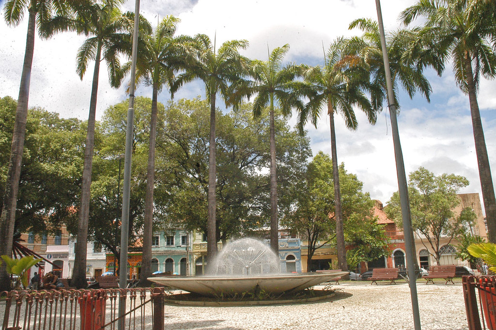
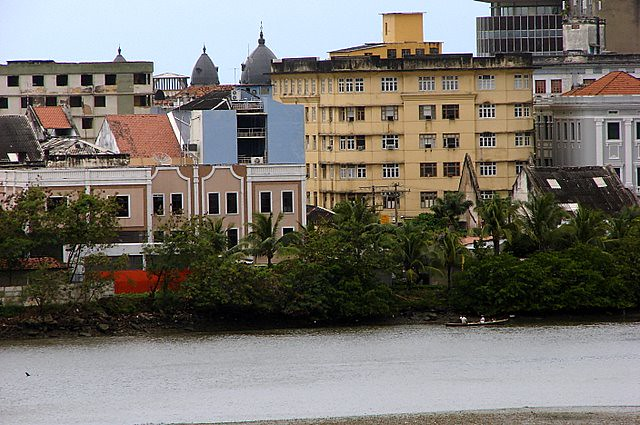

Praça do Arsenal
A Praça do Arsenal é um espaço histórico localizado no Recife Antigo, cercado por prédios antigos e restaurados. O local é palco de diversos eventos culturais e possui uma grande concentração de bares e restaurantes, sendo um ponto de encontro popular entre os moradores e visitantes da cidade.
Cais do Apolo
O Cais do Apolo é uma área às margens do Rio Capibaribe, conhecida por sua atmosfera animada e diversificada. Ao longo do cais, é possível encontrar diversos bares, restaurantes, galerias de arte e espaços culturais. Além disso, o local oferece passeios de barco pelo rio, proporcionando uma experiência única aos visitantes.
